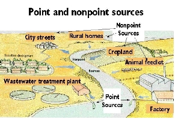
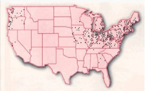
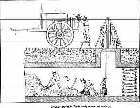
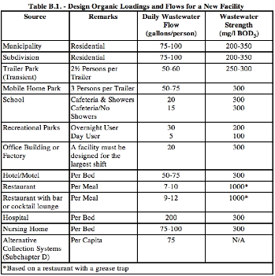

CE 3372 Water Systems Design
Lesson 26. Sanitary Sewer Hydraulics
Concepts
- Capacity Estimation
- Inflow
- Infiltration
- SWMM Example
Collection Systems
Collection systems (sewers) are used to collect wastewater and deliver it to a common location.
-
In the case of sanitary wastewater (sewage) that location is some kind of treatment facility
-
For storm-water, that location can often be an outfall to a receiving stream.
Collection systems play an important role in the control of water quality, concentrating certain kinds of potential non-point discharges into point discharges, that can be managed more efficiently.
The figure below depicts point and non-point sources, generally if you can't point to it it is a non point source in this context.

Sewer Types
Three main categories are:
-
Sanitary sewer systems — individual discharges are collected, concentrated (in the volume sense), and delivered to a treatment plant for further processing.
-
Storm sewer systems — individual discharges are collected, concentrated, and delivered to a receiving water.
-
Combined sewer system (CSS) — A sanitary system designed to also collect storm-water. New combined systems are not built in the USA; older cities that were comparatively large in the 1880’s represent the remaining combined systems, and are largely located in the Pacific Northwest, the Northeast, and around the Great Lakes as depicted in the figure below. 
The categories share similar hydraulics, namely that of open channel flow, and topologically are similar (comprised of pipes, boxes, junctions, and lift stations) so many design principles are interchangeable, although the sewer’s purposes are different.
A sanitary system is to protect public health by isolating wastes from the environment until they can be treated and the reclaimed water released. A storm system is to protect public health by removing nuisance flooding and keeping infrastructure serviceable during all but the most severe weather. In recent decades (since 1990s) storm sewer systems are anticipated to confer water quality benefit, as they are the collectors that capture non-point pollution.
Sanitary Sewer Design
Sanitary sewers are pipeline systems underground that collect and transmit sewage from distributed sources to a central location.
The pipes are typically operated as open channels, that is the pipes are not supposed to flow full, and gravity is the driving force.
In some portions of the system, the sewage has to be lifted to maintain flow towards the central plant; these locations are called lift stations, and sewage on the discharge side of the pump flows in a pipe called a force main until the pipe returns to open flow, it is then just a sewage pipe.
The rules of design are governed by federal law, state law, and in most cases municipal law. These various laws, codes, and guidelines prescribe materials, joints, labeling, etc.
Nearly all sewer systems must be engineered (i.e. a PE is involved with the design), or at least designed by a licensed professional (the professional may not be an engineer in smaller on-site systems, but the design will be stamped with that professional’s credentials.)
Sewage Characteristics
Five (5-percent solids by mass is typically the upper limit of raw sewage; by volume the percentage is much smaller, perhaps as small as 0.05 percent, thus sewage behaves hydraulically as water. Despite the mostly-water composition, the solids do settle and collect in the system. In times past people would have to go into into the sewers to remove the solids.

The figure depicts cleaning of sewers circa 1800’s. Cities like Paris, New York, London, etc. have large diameter sewers that probably still require occassional personnel access.
The design engineer is concerned with the sewage quality insofar as it affects corrosion and safety to the maintenance personnel. For example, in the Texas code, there is some discussion of corrosion and odor issues:
For example, in the Texas code, there is some discussion of corrosion and odor issues:
- Corrosion potential: If a pipe or an integral structural component of a pipe will deteriorate when subjected to corrosive internal conditions or if a pipe or component does not have a corrosive resistant liner installed by the pipe manufacturer, the report must demonstrate the structural integrity of a pipe during the minimum 50-year design life cycle. A pipe must have an appropriate lining if the corrosion analysis indicates that corrosion will reduce the functional life of the pipe to less than 50 years.
there is also discussion of corrosion and odor issues:
- Odor Control.
(a) An owner shall determine if odor control measures are necessary to prevent a wastewater collection system from becoming a nuisance, based upon the potential of the wastewater collection system to generate hydrogen sulfide.
(b) A potential odor determination must include the estimated flows immediately following construction and throughout a system’s 50-year expected life cycle.
Sewage quantity
Quantity (how much?) is estimated in a similar fashion as water demand. Small residential service area flows are estimated based on population or equivalent residential units and per-person contribution to wastewater generation. Larger service area flows are estimated from land use (zoning), anticipated population, and similar nearby measured flows.
In-system sewage is not routinely measured, but short-term studies (2-months) are well within the capabilities of most jurisdictions, flow measurement is by weirs, magmeters, and acoustic-Doppler profiling.
For example, in Texas the design flow basis is:
- An owner must design a wastewater collection system to handle the transport of the peak dry weather flow from the service area, plus infiltration and inflow.
- The flow calculations must include the details of the average dry weather flow, the dry weather flow peaking factor, and the infiltration and inflow.
- The flow calculations must include the flow expected in the facility immediately upon completion of construction and at the end of its 50-year life.
Some further requirements are:
- An owner must ensure that a wastewater collection system’s capacity is sufficient to serve the estimated future population, including institutional, industrial, and commercial flows.
- An owner must include in the report the calculations that demonstrate that the hydraulic capacity of a collection system includes the peak flow of domes- tic sewage, peak flow of waste from industrial sites, and maximum infiltration rates.
- A collection system must be designed to prevent a surcharge in any pipe at the expected peak flow.
- The minimum diameter allowed for a gravity pipe is 6.0 inches.
- Connecting storm water drains to a collection system is prohibited.
-
An owner may use the data from an existing collection system. In the absence of existing data, a design must use data from a similar system or as described below:
-
The sizing of pipe for a new collection system must be based on an engineering analysis of initial and future flows.
- A new collection system design must be sized for the peak flow, which is based on the estimated daily sewage flow contribution as shown in Figure 4 ( a copy from the Texas code is below)

Readings